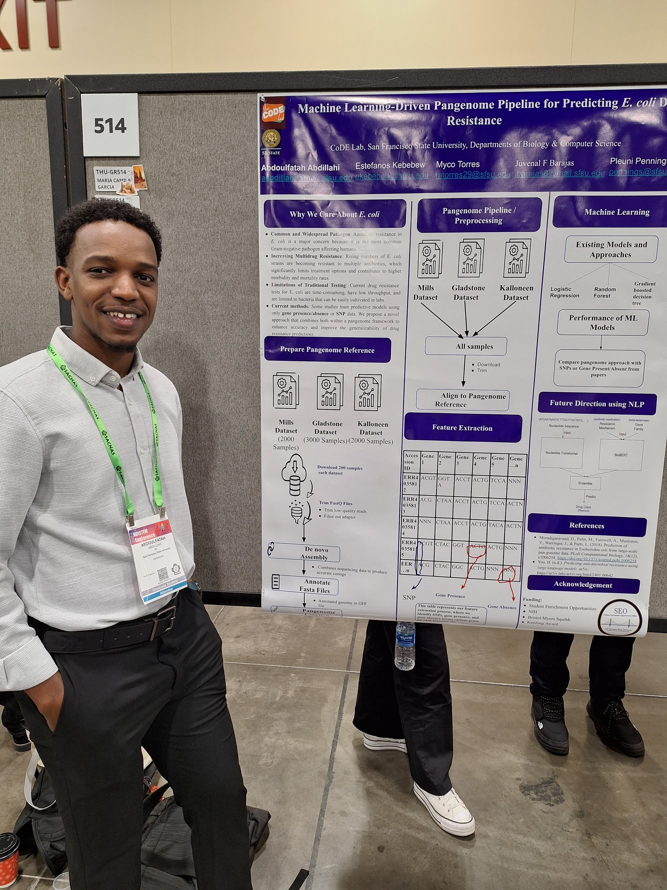
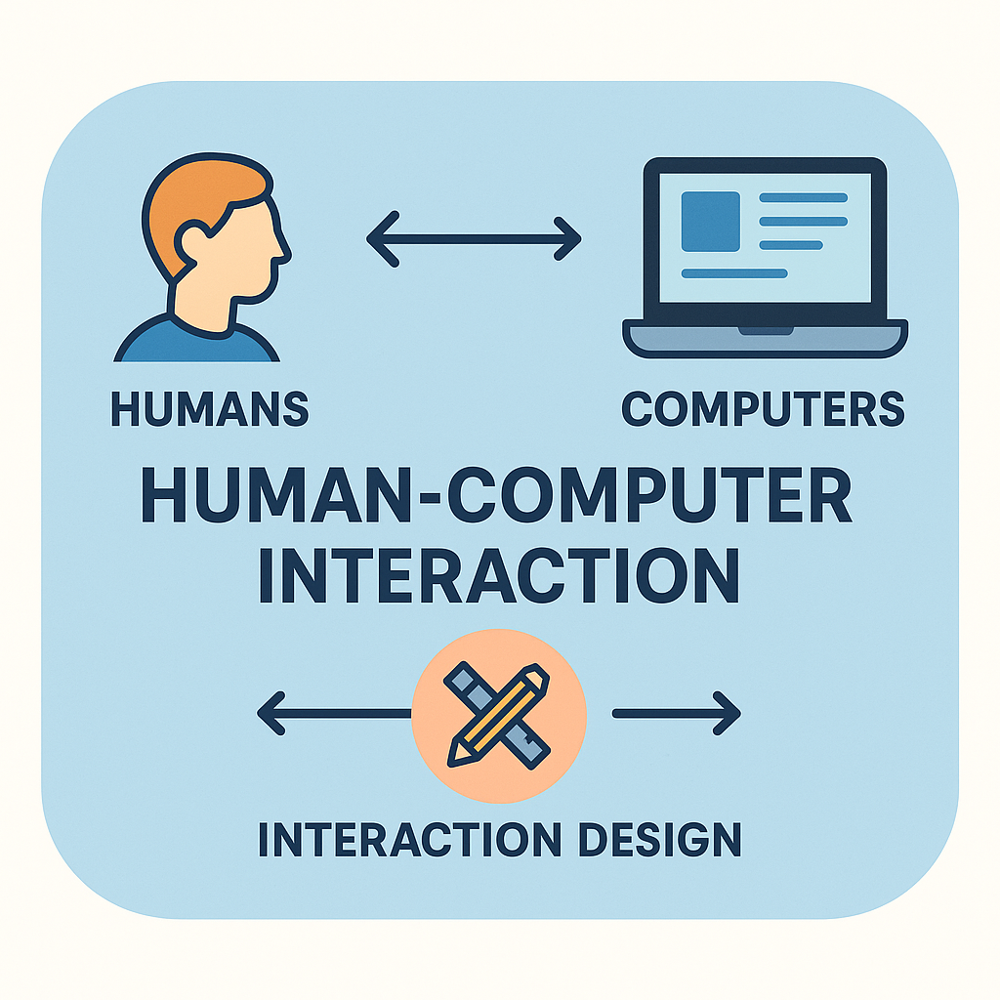
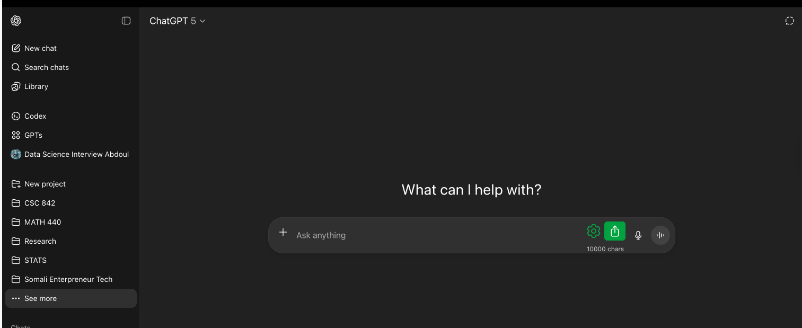
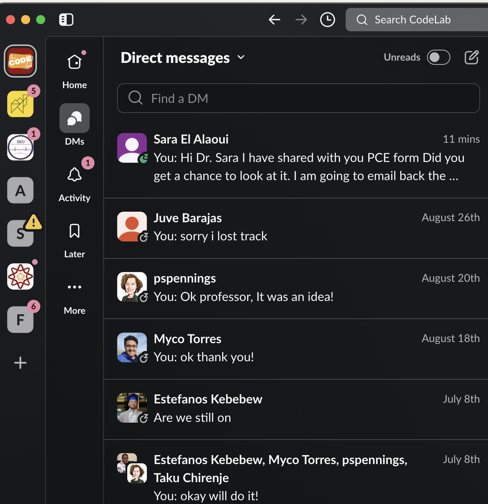
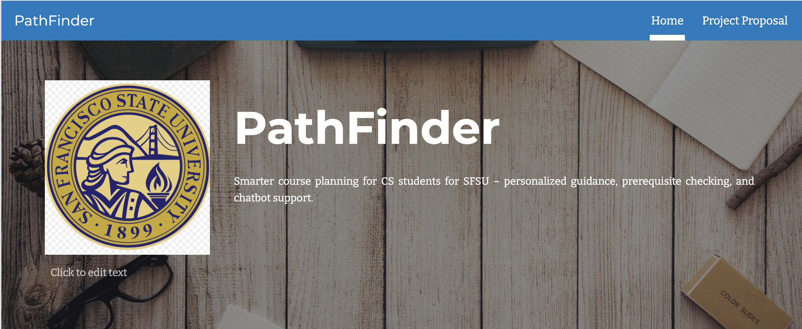

HCI Blog Series (1/6) – My Journey Begins
Key takeaways
- Framed my transition from pure ML research into Human–Computer Interaction.
- Showcased daily HCI touchpoints (ChatGPT, Slack, Spotify) that inspired this course.
- Outlined the PathFinder project goal: demystify course planning for SFSU CS students.
Introduction: Who Am I?
Hi there! 👋 I'm Abdoulfatah Abdillahi, a Master's student in Data Science & Artificial Intelligence at San Francisco State University. For the past two years, I've been part of the CodeLab research team, where we use AI to tackle antibiotic resistance in E. coli.

Presenting my SACNAS 2024 poster in Phoenix, AZ
My work involves creating pangenome datasets and building machine learning models that can predict which antibiotics will work against different bacterial strains. It's fascinating stuff – we're essentially teaching computers to understand biology in ways that can help doctors and scientists make better decisions about patient care.
But here's what really caught my attention: while I was getting really good at the technical side of things, I started wondering about the people who would actually use these systems. How would a doctor interact with my models? Would a biologist without programming experience be able to understand my results? This curiosity led me straight to Human-Computer Interaction (HCI), and I'm so excited to share this journey with you!
Why Does HCI Excite Me?
This is my very first HCI course, and I have to admit – I didn't fully understand its importance during my undergraduate days, even though my friends kept talking about it. Now I get it, and I'm genuinely excited about what I'm learning.

Human–Computer Interaction framework linking people, systems, and design
HCI isn't just about computers – it's about people. It's the art and science of making communication between humans and computer systems smooth, intuitive, and meaningful. Think about it: when you use an app on your phone, you don't want to struggle to figure out how it works. You want it to feel natural, almost like the app is reading your mind.
As someone who deals with complex biological problems every day, HCI excites me because it can help me explain my work more clearly, design better tools for scientists, and ensure my results are understandable even by people without a computer science background. The goal isn't just to build something that works – it's to build something that works beautifully for real people.
HCI in My Life: Three Positive Examples
Even before this course, I've been living with HCI every day—without realizing it. Here are three tools that shaped how I learn, work, and relax:
1. ChatGPT for Learning
One of my favorite examples is ChatGPT. It doesn't just answer questions—it feels like a knowledgeable friend.

ChatGPT research workspace used for rapid ideation
Have you ever used a tool that made learning feel effortless? That's what happens here. The interface is clean, the conversation flows naturally, and the ability to remember context lowers the "cognitive load" of learning.
This experience showed me that good HCI can turn something intimidating (like machine learning concepts) into something approachable.
2. Slack for Research Collaboration
In my research, Slack is our communication hub. What makes it special is how it organizes complexity without overwhelming us.

Slack research channels used to coordinate CodeLab collaboration
- Threaded conversations keep discussions tidy.
- Searchable history means I can find that one key message from weeks ago.
- Integrations with tools like Google Drive make collaboration seamless.
The design reduces friction so my team can focus on research, not on navigating clunky software. That's HCI at its best: technology that "gets out of the way."
3. Spotify for Music Discovery
Finally, let's talk about Spotify. I love discovering new music, and its recommendation system feels almost magical.
The "Discover Weekly" playlist is like having a friend who knows my taste better than I do. I don't have to think about algorithms—it just works. The clean design and cross-device integration make the whole experience feel smooth and personal.
To me, this is a perfect HCI example: advanced tech made invisible through thoughtful design.
How HCI Shapes My Growth
For a long time, I used these tools without realizing they were products of HCI research and design. Now I understand that learning HCI changes the way I see technology. Instead of only asking "What does this system do?" I now ask, "How will people experience this system?"
This shift is crucial for my career goals. I want to become someone who creates solutions that are not just technically advanced, but also human-friendly. For example, in my research, I hope to design interfaces that present complex biological data in simple, visual ways so biologists – even those without programming knowledge – can understand and use the results.
HCI is helping me grow empathy, clarity, and communication skills. These are qualities that I believe will help me become the best version of my dream self – a researcher who bridges the gap between advanced AI and real-world users.
HCI is my reminder that even the most complex AI ideas must feel simple, respectful, and human to be meaningful.
My Semester Project: PathFinder
Speaking of bridging gaps, let me tell you about my semester project: PathFinder. It's a web application designed to assist Computer Science students at SFSU with smart course planning, complete with chatbot support for enhanced interactivity and personalization.

PathFinder landing page - Smart course planning interface for SFSU Computer Science students
This project is deeply personal to me. As a first-generation college student, I struggled significantly with course selection during my undergraduate studies. I often relied on unclear or biased advice from friends and seniors, and I frequently wished for a straightforward, simple, and reliable system to guide me through the maze of course requirements and prerequisites.
PathFinder is my solution to this problem for future generations of students. My goal is to build a functional system by the end of the semester that students can actively use, helping them feel more confident and less overwhelmed when planning their academic journey.
The HCI principles I'm learning will be crucial in making PathFinder truly useful. I need to understand how students think about course planning, what information they need most, and how to present complex academic requirements in a way that feels supportive rather than overwhelming.
Looking Forward
This is just the beginning of my HCI journey, and I'm excited to see how these principles will shape not just my semester project, but my entire approach to creating technology that serves people. Every day, I'm learning to see the world through the lens of human experience, and I can't wait to share more insights as this journey continues.
Stay tuned for the next blog in this series, where I'll dive deeper into specific HCI principles and how they're influencing my work on PathFinder!